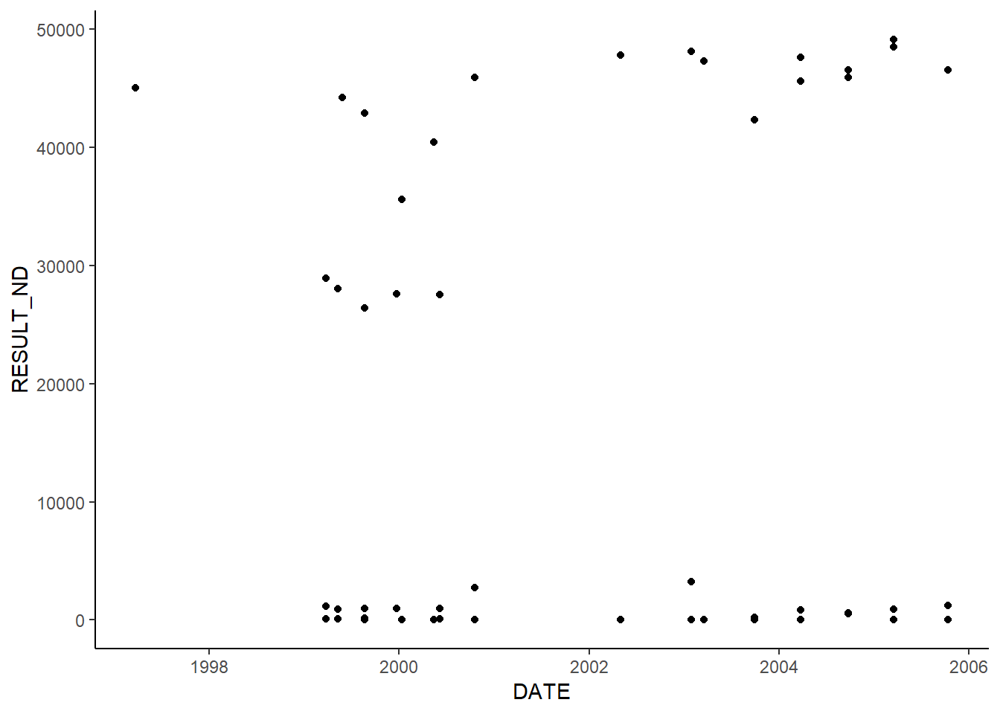
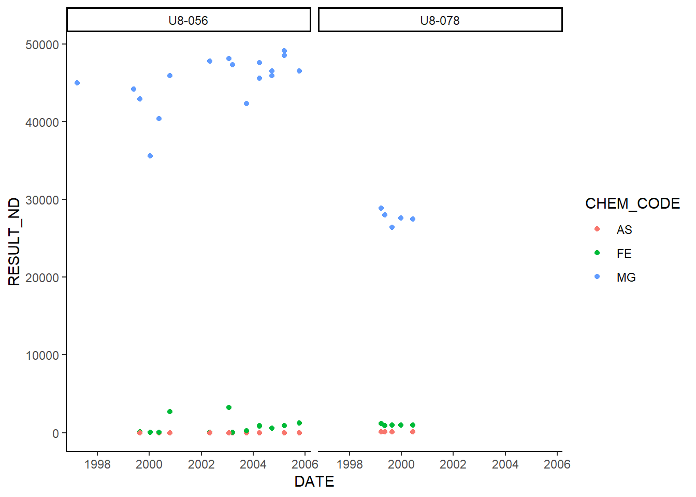

Lesson 2 - Data Sources, Data Wrangling, ggplot2
R Packages
A package is group of code files and associated files that are compiled to provide a library of R functions which serve a common purpose. An example is package ‘xlsx’ which contains functions for use in working with Excel files from R. Try installing these Excel interfacing packages, though some are dependent upon your current installation of JAVA.
install.packages('xlsx')
install.packages('readxl')
install.packages('openxlsx')
install.packages('XLConnect')
If you are getting an error installing some of these packages, request updated versions of 32- and 64-bit JAVA to be installed on your machine. Package readxl should not be problematic, however, as it does not have JAVA dependencies.
Most R packages install from the CRAN network, a worldwide repository for publicly shared R packages. There are thousands of packages contributed to the CRAN repository for almost any application, scientific or otherwise, you can think of. Packages can also be installed from any other repository such as GitHub or just from a .zip file, if the package you are interested in is not on CRAN.
Install Packages for this Class
Packages just need to be installed once on your machine, however, many packages are frequently updated.
Let’s install the following packages for use in this class:
install.packages('dplyr') #This is a group of very powerful data wrangling functions.
install.packages('data.table') #Another popular and very powerful data wrangling package, popular with people processing large amounts of data.
install.packages('ggplot2) #A VERY popular visualization and plotting package.
Loading Packages to Local Memory
THough packages need only be installed once on your machine, they need to be called into local memory before use in every R session.
library(dplyr) library(ggplot2) library(data.table)
See what is loaded in the current session:
sessionInfo()
See where your packages are:
.libPaths()
Getting Data into R
There are lots of ways to import data to local memory and start working with the data, as there are ways to export your created objects.
Common Data Sources
- CSV file
- Tab delimited file
- Excel file
- Download a file from the internet
- Read a file from the internet
- SQL query from a database
- Web APIs
- Scrape webpages
Download File
download.file(filepath) Download the datafile from my github.
fp<-'https://raw.githubusercontent.com/peernisse/LearnR/master/lesson2Data.csv'
download.file(fp,destfile = './data/lesson2Data.csv',method='libcurl')Import Data from File
Read these data files into local memory so we can do stuff with the data.
Reading from CSV
#Read csv file
data<-read.csv('./data/lesson2Data.csv', stringsAsFactors = FALSE)Inevitible Data Wrangling
Filtering, selecting and arranging the data is all part of setting up for your analysis. The dplyr package provides a powerful set of functions for data manipulation. Also see data.table. Here, we will focus on dplyr.
Intoduction to dplyr
We have two datasets in memory right now, one in long format and one in wide format.
What the what is Peter talking about right now?
Long Format Data
This format is most useful for computerized statistical analysis, database data storage, and for analytical plotting.
lf<-data %>% select(LOC_ID, SAMP_DATE,MATRIX_CODE,CHEM_CODE,RESULT,UNITS) %>% .[1:10,]
lf## LOC_ID SAMP_DATE MATRIX_CODE CHEM_CODE RESULT UNITS
## 1 U8-048 19-AUG-99 WG HG 0 UG/L
## 2 U8-048 19-AUG-99 WG SB 0 UG/L
## 3 U8-048 19-AUG-99 WG AS 0 UG/L
## 4 U8-048 19-AUG-99 WG BA 554 UG/L
## 5 U8-048 19-AUG-99 WG BE 0 UG/L
## 6 U8-048 19-AUG-99 WG CD 0 UG/L
## 7 U8-048 19-AUG-99 WG CA 67700 UG/L
## 8 U8-048 19-AUG-99 WG CR 0 UG/L
## 9 U8-048 19-AUG-99 WG FE 911 UG/L
## 10 U8-048 19-AUG-99 WG PB 0 UG/LWide Format Data
This data format is most useful for printing out on paper and then looking at it with your eyes. If you want to address analytical questions with a dataset like this, you will need paper, pencils, highlighters, maybe colored tape, and a calculator. We will look more at transitioning between long and wide formats in the next lesson.
wf<-data %>% select(LOC_ID,SAMP_DATE,CHEM_CODE,RESULT) %>%
filter(LOC_ID %in% c('U8-051','U8-052','U8-089','U8-046'),
CHEM_CODE %in% c('AS','CD','FE','PB')) %>%
data.table::dcast(LOC_ID+SAMP_DATE~CHEM_CODE,fun.aggregate=max) %>%
.[1:10,]
wf## LOC_ID SAMP_DATE AS CD FE PB
## 1 U8-046 08-SEP-95 60.10000 0 898.00 0
## 2 U8-046 16-MAY-00 -Inf -Inf 866.00 -Inf
## 3 U8-046 18-APR-97 69.70000 -Inf 896.00 -Inf
## 4 U8-046 22-AUG-96 0.00000 -Inf 994.00 -Inf
## 5 U8-051 01-DEC-06 0.00718 0 0.00 0
## 6 U8-051 01-DEC-10 -Inf -Inf 1.09 -Inf
## 7 U8-051 02-FEB-98 -Inf -Inf 1070.00 -Inf
## 8 U8-051 02-NOV-09 -Inf -Inf 0.00 -Inf
## 9 U8-051 03-APR-09 -Inf -Inf 0.00 -Inf
## 10 U8-051 07-SEP-95 0.00000 0 0.00 0The data we just downloaded are very clean, lucky us. But we will want to check the head, tail and dimensions briefly to see what we have here.
head(data)
tail(data)
dim(data)
names(data)
str(data)Looks good. Let’s follow an example of calculating summary statistics on our data and creating a plot using ggplot2 package. But first, as is always the case, we will need to massage the dataset before we do analyses.
Date Formatting
A common issue in data work is formatting of dates and times. Check the format of our date column SAMP_DATE using class() and the $ operator.
class(data$SAMP_DATE)## [1] "character"Our date column is a character class, meaning things would not sort by date and no hope of time series graphs, etc. THis happens commonly when reading data from a text file.
The following code will be of great help in fixing this. We will create a new column in the data frame and it will hold correctly formatted dates.
Method 1
data$DATE<-as.Date(data$SAMP_DATE,format='%d-%b-%y')
class(data$DATE)## [1] "Date"Method 2
newdates<-strptime(data$SAMP_DATE,format='%d-%b-%y')
data$DATE<-as.POSIXct(newdates)
class(data$DATE)## [1] "POSIXct" "POSIXt"Now our data will sort by date properly. But we are going to want to do some other data manipulation to simplify the dataset and then analyze it.
Intoduction to dplyr
There are many means of wrangling data in R, dplyr is a popular library for doing this, as is data.table, and of course base R. We will be using dplyr in this lesson.
library(dplyr)Select and Filter
Let’s see what chemicals we have in the dataset, using unique().
unique(data$CHEM_CODE)
unique(data$LOC_ID)Now, let’s grab just the columns we need, and then use filtering to zero in on just a few locations and chemicals. We will use dplyr functions select and filter.
#Create new dataframe to leave the original intact
newdata<-select(data,LOC_ID,DATE,CHEM_CODE,RESULT,UNITS,PAR_VQ,MDL)
dim(newdata)## [1] 28517 7newdata<-filter(newdata,LOC_ID %in% c('U8-056','U8-078'),CHEM_CODE %in% c('FE','AS','MG'))
dim(newdata)## [1] 70 7Summarize
We can use the dplyr functions group_by and summarize to create a summary table.
#Create dtaframe containing a summary
summary<-group_by(newdata,CHEM_CODE,LOC_ID)
summary<-summarize(summary,
MinDate=min(DATE),
MaxDate=max(DATE),
N=length(RESULT),
Min=min(RESULT),
Max=max(RESULT),
Average=mean(RESULT),
Stdev=sd(RESULT))
summary## # A tibble: 6 x 9
## # Groups: CHEM_CODE [3]
## CHEM_CODE LOC_ID MinDate MaxDate N Min
## <chr> <chr> <dttm> <dttm> <int> <dbl>
## 1 AS U8-056 1997-03-24 00:00:00 2005-10-13 00:00:00 16 0.
## 2 AS U8-078 1999-03-25 00:00:00 2000-06-07 00:00:00 6 9.86e1
## 3 FE U8-056 1997-03-24 00:00:00 2005-10-13 00:00:00 17 0.
## 4 FE U8-078 1999-03-25 00:00:00 2000-06-07 00:00:00 7 8.97e2
## 5 MG U8-056 1997-03-24 00:00:00 2005-10-13 00:00:00 17 3.56e4
## 6 MG U8-078 1999-03-25 00:00:00 2000-06-07 00:00:00 7 2.64e4
## # ... with 3 more variables: Max <dbl>, Average <dbl>, Stdev <dbl>The Pipe Operator ( %>% )
In dplyr there is a very useful operator called the pipe, which removes the need to state your object as the first argument of a dplyr function, and chains the whole process together. It is an annoying character to type, so use the key shortcut for it which is ctrl+shift+M.
summary<-data %>%
select(LOC_ID,DATE,CHEM_CODE,RESULT,UNITS,PAR_VQ,MDL) %>%
filter(LOC_ID %in% c('U8-056','U8-078'),CHEM_CODE %in% c('FE','AS','MG')) %>%
group_by(CHEM_CODE,LOC_ID) %>%
summarize(MinDate=min(DATE),
MaxDate=max(DATE),
N=length(RESULT),
Min=min(RESULT),
Max=max(RESULT),
Average=mean(RESULT),
Stdev=sd(RESULT))
summary## # A tibble: 6 x 9
## # Groups: CHEM_CODE [3]
## CHEM_CODE LOC_ID MinDate MaxDate N Min
## <chr> <chr> <dttm> <dttm> <int> <dbl>
## 1 AS U8-056 1997-03-24 00:00:00 2005-10-13 00:00:00 16 0.
## 2 AS U8-078 1999-03-25 00:00:00 2000-06-07 00:00:00 6 9.86e1
## 3 FE U8-056 1997-03-24 00:00:00 2005-10-13 00:00:00 17 0.
## 4 FE U8-078 1999-03-25 00:00:00 2000-06-07 00:00:00 7 8.97e2
## 5 MG U8-056 1997-03-24 00:00:00 2005-10-13 00:00:00 17 3.56e4
## 6 MG U8-078 1999-03-25 00:00:00 2000-06-07 00:00:00 7 2.64e4
## # ... with 3 more variables: Max <dbl>, Average <dbl>, Stdev <dbl>Mutate
The dplyr function mutate is used to create or modify columns.
In our data example, I would like the non-detected values currently recorded as zero to be replaced with one-half the method detection limit (MDL). We will create a new column RESULT_ND to hold this information, using the function ifelse to do the logic.
newdata<-data %>%
select(LOC_ID,DATE,CHEM_CODE,RESULT,UNITS,PAR_VQ,MDL) %>%
filter(LOC_ID %in% c('U8-056','U8-078'),CHEM_CODE %in% c('FE','AS','MG')) %>%
mutate(RESULT_ND = ifelse(PAR_VQ=='ND',0.5*MDL,RESULT))#ifelse reads 3 arguments the same as the IF function in Excel
head(newdata)## LOC_ID DATE CHEM_CODE RESULT UNITS PAR_VQ MDL RESULT_ND
## 1 U8-056 1999-08-23 FE 129 UG/L = 24.2 129.00
## 2 U8-056 1999-08-23 AS 0 UG/L ND 3.3 1.65
## 3 U8-056 1999-08-23 MG 42900 UG/L = 37.0 42900.00
## 4 U8-078 1999-08-23 AS 105 UG/L = 3.3 105.00
## 5 U8-078 1999-08-23 FE 984 UG/L = 24.2 984.00
## 6 U8-078 1999-08-23 MG 26400 UG/L = 37.0 26400.00Basic ggplot2 Plotting
The basic ggplot syntax involves a call to the ggplot() function providing the data frame source, and the x and y columns inside the aes() function, then defining a geometry to plot. In our case, we will start with our DATE and RESULT_ND columns and a geometry of points to make time series plots.
library(ggplot2)
g<-ggplot(newdata,aes(DATE,RESULT_ND))+
geom_point()
g
g2<-ggplot(newdata,aes(DATE,RESULT_ND,color=CHEM_CODE))+
geom_point()+
facet_wrap(~LOC_ID)
g2
g3<-ggplot(newdata,aes(DATE,RESULT_ND,color=LOC_ID))+
geom_point()+
facet_wrap(~CHEM_CODE,scales='free')
g3
g4<-ggplot(newdata,aes(DATE,RESULT_ND))+
geom_point()+
facet_grid(LOC_ID~CHEM_CODE,scales='free')
g4
g5<-ggplot(newdata,aes(DATE,RESULT_ND,color=LOC_ID))+
geom_line(linetype='dashed')+
geom_smooth(method='lm')+
geom_point()+
facet_wrap(~paste0(CHEM_CODE,' (',UNITS,')'),scales='free')+
labs(title='Metals Time Series at 2 Wells',x='Date',y='Concentration (units)')+
theme(legend.position = 'bottom',legend.title = element_blank())
g5
Save Out Plots and Tables
ggsave('./output/lesson2plots.png',g5,width = 7,height = 5,units = 'in')
write.csv(summary,'./output/lesson2summary.csv',row.names = FALSE)Exercises
Check Back Soon!